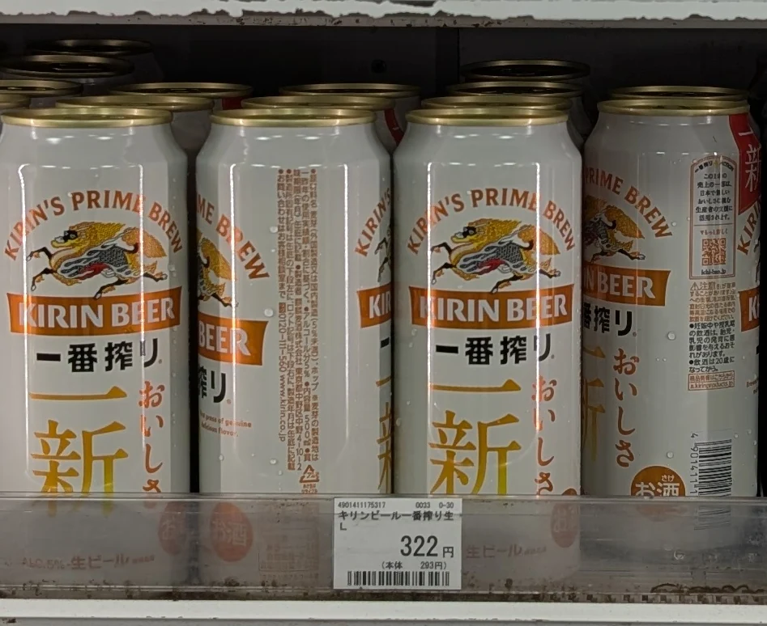
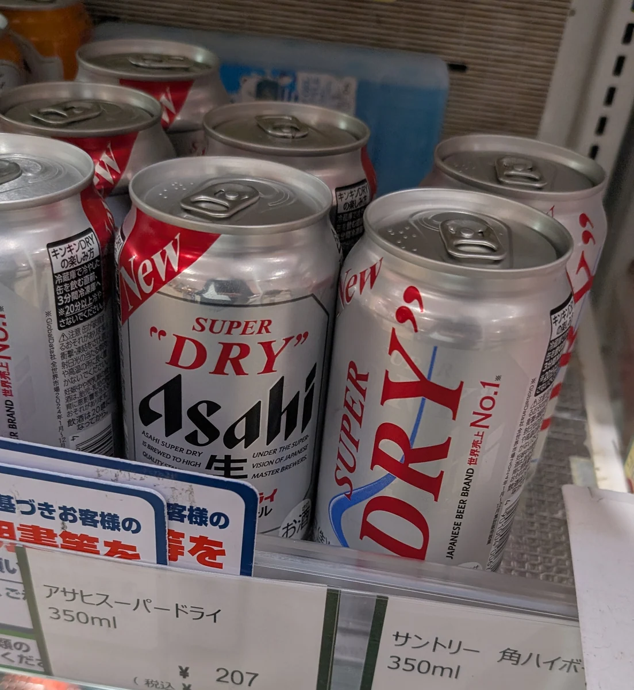
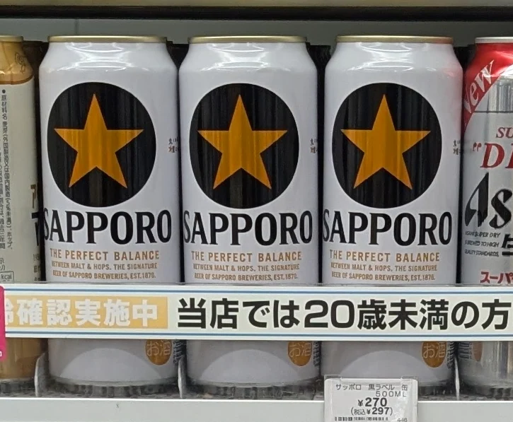
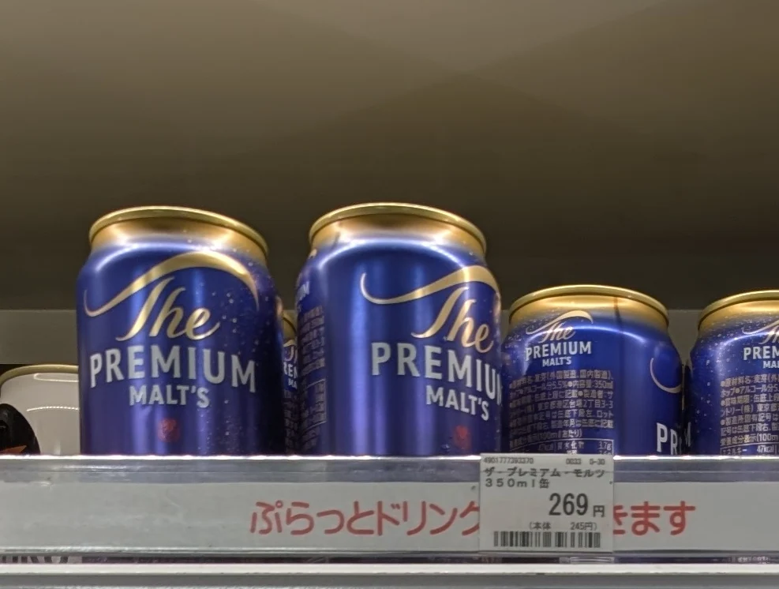
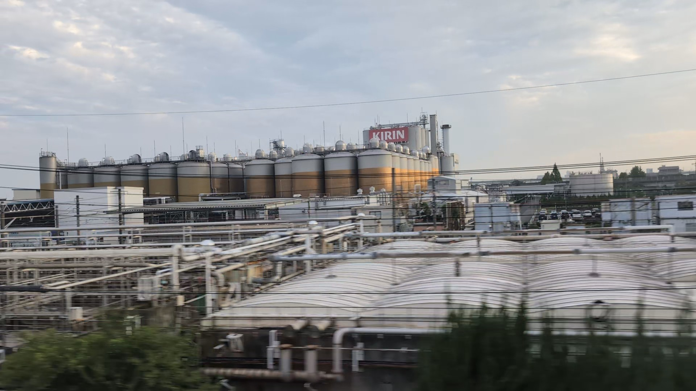
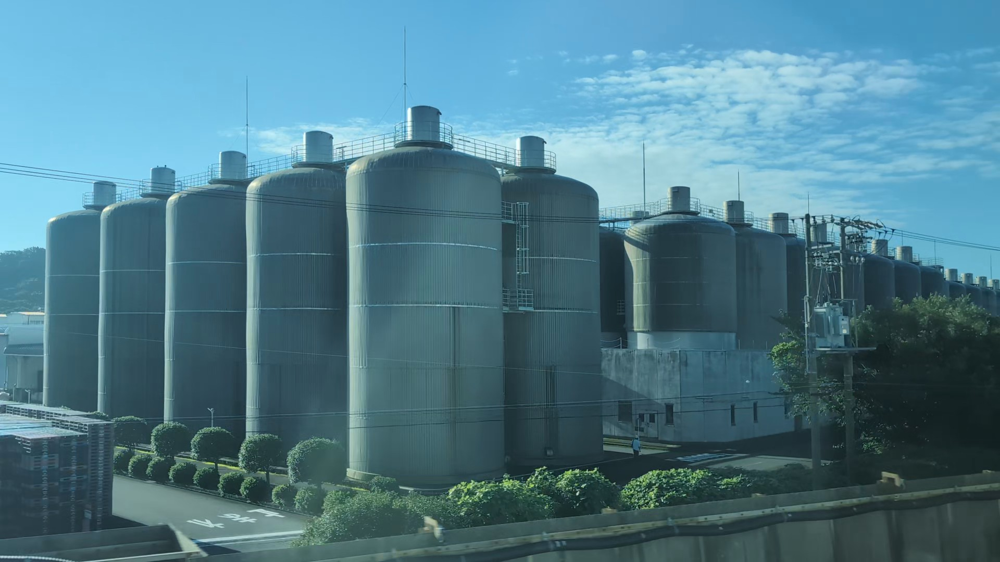
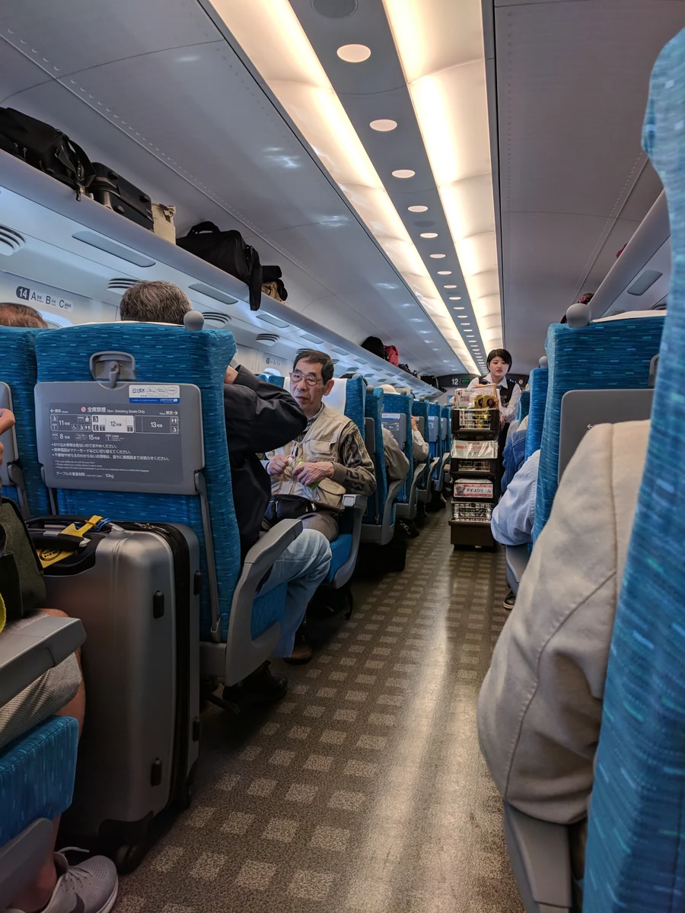

旅途中的小樂趣
讓乘車本身也成為假期。
買好車站便當、坐下、放好行李。窗外城市漸漸變成田野。一罐啤酒可以讓人慢慢進入旅程，也嚐到日本的日常。
19世紀末，從橫濱到北海道，釀酒廠興起，啤酒融入近代日本。今天從普通冰罐開始，認識其特色再看看窗外：Kirin與Sapporo的工廠就在東海道新幹線旁。
01 / 認識日本啤酒
金色拉格，不同的清爽。
Kirin、Asahi、Sapporo與Suntory的熟悉罐裝是起點。除了名字，還可以注意這些。
日常啤酒有哪些特色？
日本大廠尤其以皮爾森風格拉格聞名：金色、清爽、容易佐餐。這是認識的起點，並不代表所有日本啤酒。
麥芽帶來穀物風味與酒體，啤酒花帶來苦味與香氣。「Dry」尾韻較快消退，厚實款可能留味較久。不懂品飲術語，也能配便當體會這些差別。
從喜歡的尾韻開始。下方四罐各有麥芽、香氣與清爽的想法；品飲提示是邀請你自己發現。
背景資料： 日本啤酒 · JNTO · Super Dry成分（日文） · Black Label成分（日文）

KIRIN · 麥芽主導，圓潤
Ichiban Shibori
一番搾り
「一番搾り」是第一道榨取。Kirin只用發酵前從麥芽醪取出的第一道麥汁釀這款全麥芽啤酒。名字是釀法選擇，不是啤酒風格。
旅途中。 喜歡麥芽味可以從這罐開始。吃第一口前先啜一口，留意穀物般的風味。
貨架上。 找大大的「一番搾り」與Kirin麒麟圖樣。
在鐵道旁再遇Kirin Ichiban Shibori · Kirin（日文）
ASAHI · 俐落清爽
Super Dry
スーパードライ
1987年上市的Super Dry，以俐落尾韻為特色。Asahi稱為「辛口」：風味鮮明而迅速收尾。啤酒標籤的辛口不是辣椒的辣。
旅途中。 偏好俐落尾韻，可從這罐開始。注意一口後留下多少風味，再搭鹹食試試。
貨架上。 找銀色罐、Asahi字樣與「辛口」。
廠商指南（日文）
SAPPORO · 麥香清爽
Black Label
黒ラベル
Black Label兼具麥芽風味與清爽餘味。想要酒體又喜歡俐落尾韻，可試這個中間點。雖叫黑標，罐中是金色拉格。
旅途中。 便當有多種小菜，可以注意同一口啤酒搭不同食物的感受。
貨架上。 找SAPPORO、金星與深色圓標。
找Sapporo靜岡工廠 廠商指南（日文）
SUNTORY · 芳香飽滿
The Premium Malt’s
ザ・プレミアム・モルツ
Suntory讓這款全麥芽拉格呈現較飽滿風味與啤酒花香。麥芽經兩段煮沸，歐洲香氣啤酒花也增添個性。經典款所屬系列還有艾爾。
旅途中。 想認識香氣，可在第一口前停一下聞香。熟悉的拉格，也有許多可探索。
貨架上。 找The PREMIUM MALT’S，也可能聽到日文暱稱「プレモル」（Premol）。
The Premium Malt’s · Suntory（日文）02 / 小字，大線索
標籤的一點小幫助。
廠商、啤酒風格、「生」等詞，各有不同意思。認識一點，下一罐更有趣。
ラガー
熟悉的起點。
拉格與艾爾使用不同酵母與發酵條件。許多熟悉的日本金色啤酒是拉格。 皮爾森 是拉格的一種。
エール
另一個可探索的家族。
艾爾通常在較高溫發酵，常有果香或鮮明香氣；兩大類都包含廣泛風味。
黑啤酒 描述顏色，深色麥芽常帶烤香或焙香。黑啤可以是拉格，也可以是艾爾。
精釀啤酒 不是單一風味或發酵方式，日本也沒有統一共識的定義。請看啤酒風格與廠商說明。
試試罐上的詞
這個詞是什麼意思？
「生」也可以裝罐。
在啤酒上， 生 表示未經加熱殺菌。可以裝罐或裝瓶，單看這個詞不代表從酒頭現倒。
ビール / 発泡酒
啤酒 / happōshu。這些日本商品分類依成分等規則決定，並非風味排名。除了價格，也看品名。
ノンアルコール
無酒精。 想找無酒精啤酒風味飲，請找這些字樣並確認包裝的酒精含量。
延伸閱讀： 拉格與艾爾 · Sapporo（日文） · 「生」· Sapporo（日文） · 啤酒風格與分類 · NRIB（日文PDF） · 精釀啤酒 · Kirin（日文）
03 / 從罐子到風景
桌上的啤酒，也在窗外有個地方。
東京與新大阪之間，剛認識的名字可能出現在東海道新幹線旁。兩間工廠把車站貨架，變成經過之地的故事。

名古屋 ↔ 岐阜羽島 E席側
更大尺度的Kirin。
名古屋與岐阜羽島之間，找Kirin名古屋工廠排列的銀色槽罐。罐上的名字，成了鐵道旁的地方。
不懂釀酒設備也能享受這個連結。認出KIRIN，就為這段旅程添了小故事。
看Kirin工廠車窗指南 (英文)
靜岡 ↔ 掛川 · 燒津 A席側
Sapporo也在靜岡。
Sapporo讓人想到北方的北海道，但這些大槽罐位於靜岡與掛川之間的燒津，是Sapporo靜岡工廠。
品牌能帶你超越名字中的城市。從A席側看，槽罐成為一閃而過的地標。
看Sapporo工廠車窗指南 (英文)A、E指東海道新幹線普通車的窗側。這些風景連結品牌與工廠，不表示你這罐就在此製造。
旅途歷史的一小頁
曾經，飲料會來到座位旁。
乘務員推著飲食推車走過走道，像來到座位旁的小店。2018年4月於小田原附近拍的照片，留下曾屬東海道新幹線旅程的場景。
這條路線的推車服務於 2023年10月31日於Nozomi、Hikari結束。JR Central提到車站商店更充實、自帶飲食旅客增加、安靜車廂需求與人力因素。
隨風景喝一杯的小樂趣仍在。如今搭普通車，從上車前在車站挑一罐開始。

實用小提醒
上車前購買，乘車時享用。
在車站
預留選便當與飲料的時間。常見罐裝容量350、500毫升，請看容量與酒精濃度。這四個品牌可作尋找線索，包裝與庫存因店而異。
東海道新幹線普通車無車內販售。Nozomi、Hikari的Green車有手機點餐，請確認現行菜單與供應。
在座位
坐好後再開罐，使用小桌板，輕聲交談。空罐與包裝請分類丟棄或帶走。
本指南介紹在新幹線座位享用啤酒。擁擠通勤列車上，請留待更舒適的地方再飲食。日本飲酒年齡為20歲以上。
照片出處與閱讀說明
包裝與店舖庫存會變動。商品描述依廠商資料；品飲與食物組合是編輯建議，不是評分或固定配對。背景、成分與車內服務資料核對於2026年10月6日；標籤與風格資料核對於10月4日。
這是獨立編輯指南；品牌名用於識別啤酒。
下列照片各有自己的授權。
- Food service aboard shinkansen.jpg — Grendelkhan · 2018-04-21. 原始照片 · CC BY-SA 4.0。完整照片經縮放、方向校正並轉為WebP，無裁切、修圖或影像生成。展示版本依CC BY-SA 4.0提供。
各罐旁的廠商連結通往現行商品。一番搾り的釀法細節見 Kirin說明（日文） .